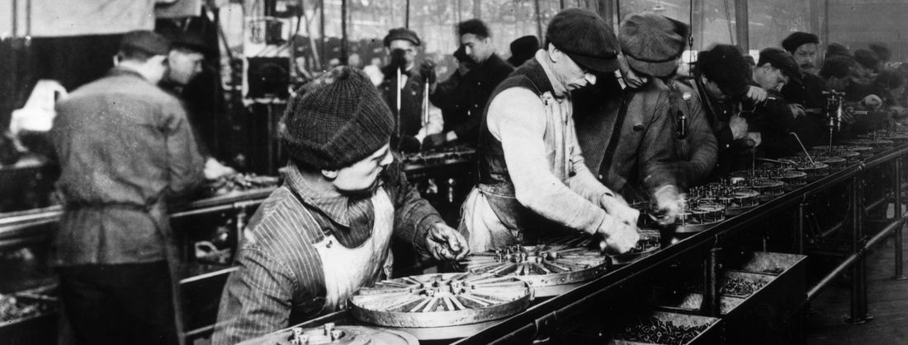
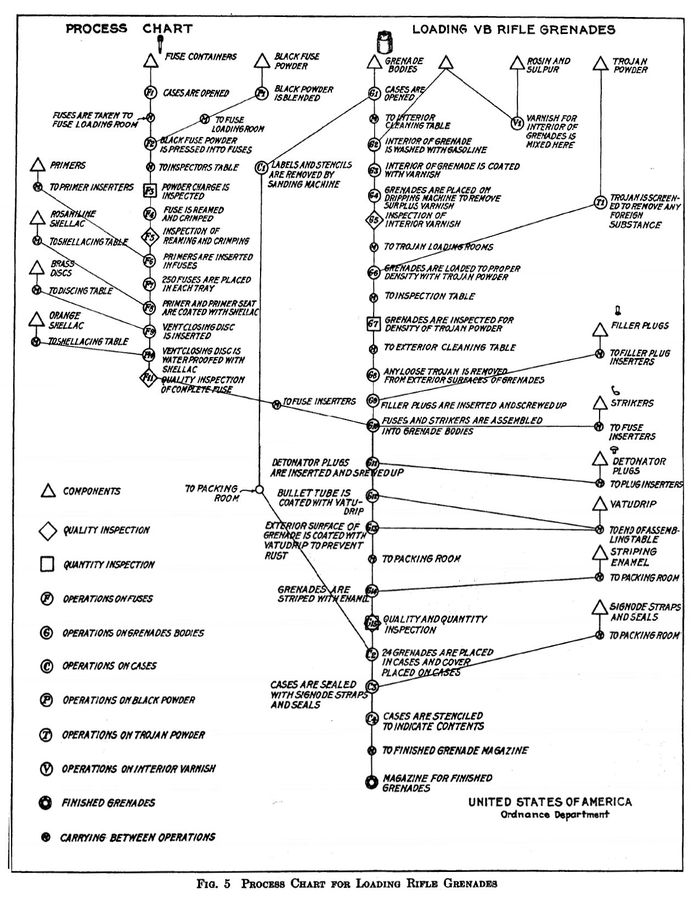
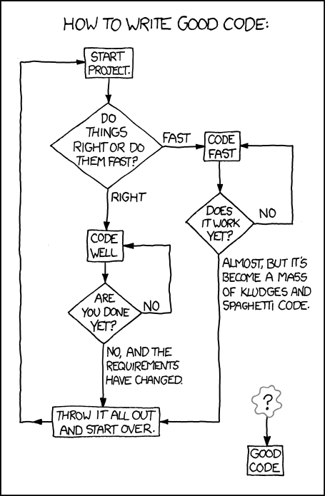
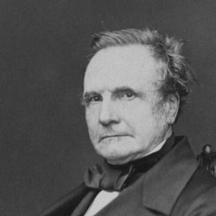
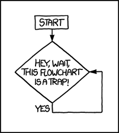

Introduction to Algorithms and Flowcharts
Before writing a single line of C++, you need a plan. This chapter shows how to describe that plan two ways — as a flowchart drawn from standard symbols, and as pseudocode written in English-like phrases — and how branching and loops appear in both.
From problem to plan

1.1What is an algorithm?
An algorithm is a step-by-step sequence of instructions that describes how the data are to be processed to produce the desired outputs. In essence, it answers the question: “What method will you use to solve the problem?” — before any code exists.
You can describe the same algorithm in two standard notations:
- a flowchart — an outline of the basic structure or logic of the program, drawn with standard symbols;
- pseudocode — the same steps written as English-like phrases.

An algorithm must be seen to be believed, and the best way to learn what an algorithm is all about is to try it.
1.2The flowchart symbols
Each symbol has one job. Learn these seven and you can read any flowchart in this course.
Terminal
Marks the Start and the End of the algorithm. Exactly one way in, one way out.
Input / Output
Reads data in (Input Hours, Rate) or displays results (Display Pay).
Process
A calculation or assignment: Pay ← Hours × Rate.
Decision
Asks a yes/no question; the flow leaves along the Yes arrow or the No arrow.
Flowlines
Arrows connecting the symbols — they define the order of execution.
Connector
Joins parts of a flowchart — for example when it continues in another column or page.
Predefined process
A named sub-algorithm defined elsewhere — a preview of functions (Chapter 6).
These symbols aren't an arbitrary invention. The idea of drawing a procedure as small boxes joined by arrows was standardized for industrial work decades before the first electronic computer existed.
In 1921, industrial engineers Frank and Lillian Gilbreth presented “Process Charts: First Steps in Finding the One Best Way to Do Work” to the American Society of Mechanical Engineers — a way to draw a factory procedure as a chain of symbols joined by lines, so a wasted or repeated step became visible on paper before it cost a minute on the floor. In 1947, ASME adopted a symbol set derived from that paper as a formal standard; it grew, through later revisions, into the ANSI/ISO notation you just learned.

A century later, flowcharts are common enough in software culture to be the setup for a joke about the process of writing software itself.

1.3A first flowchart: the payroll program
Example 1.2.1 computes an employee's pay. Note how the four working symbols appear in
sequence — and that Name, Hours, Pay are
variables: named places that hold values.

On two occasions I have been asked,—“Pray, Mr. Babbage, if you put into the machine wrong figures, will the right answers come out?” … I am not able rightly to apprehend the kind of confusion of ideas that could provoke such a question.
1.4The same algorithm in pseudocode
Pseudocode trades symbols for English-like phrases. The payroll flowchart above becomes:
Input the three values into the variables Name, Hours, Rate Calculate Pay = Hours * Rate Display Name and Pay
Both notations describe the same algorithm — you should be able to convert in either direction. In exams, both directions are asked.
Note G's own diagram marks a block of steps — Operations 13 to 23 — to repeat once for every new number, exactly the idea Section 1.6 calls a loop (its pull-quote below is Lovelace's own words for it). Modern researchers tracing her diagram by hand also found what may be the oldest bug in computing: one division step has two working variables the wrong way round — possibly a typesetter's slip, but the result would have been wrong regardless. Read the full trace in Two-Bit History's “What Did Ada Lovelace's Program Actually Do?”, or the algorithm itself in the 1843 “Sketch of the Analytical Engine, with Notes by A.A.L.”
1.4bWorked pseudocode examples from the slides
Four more algorithms in pseudocode — one guard, one chain of decisions, and two loops. Read each one and trace it: pick concrete input values and follow the steps with pencil and paper (or rebuild it in the Flowchart Studio below and press Step).
Input A
if A > 0 then
calculate B = sqrt(A)
print B
else
print "A is negative"
endif
Example 1.4.1 — a decision guards the square root: it only runs when A > 0.
Input a, b, c
Calculate del = b² − 4·a·c
if del > 0 then
x1 = (−b + sqrt(del)) / (2·a)
x2 = (−b − sqrt(del)) / (2·a)
print x1, x2
else if del = 0 then
x = −b / (2·a)
print x
else
print "No solution"
endif
Example 1.4.2 — solving ax² + bx + c = 0 with a chain of decisions covering the three cases of del.
NUM ← 4
do
SQNUM ← NUM²
Print NUM, SQNUM
NUM ← NUM + 1
while (NUM <= 9)
Example 1.5.1 — the squares loop: the test comes after the body, so the body always runs at least once.
sum ← 0
count ← 1
do
if count is even then
sum ← sum + count
endif
count ← count + 1
while count <= 20
Display sum
Example 1.5.2 — a decision inside a loop: only even values of count are added. It displays 110.
1.5Branching: the algorithm chooses a path
A decision diamond splits the flow. With only a “then” branch you get
if … then S endif; with both branches, if … then S1 else S2 endif.
The two paths join again below.
Example 1.4.1 uses this shape to guard a square root — computing B = sqrt(A) only when A > 0, printing “A is negative” otherwise. Example 1.4.2 chains decisions to solve the quadratic equation ax² + bx + c = 0 — you will program exactly this in Chapter 3.
1.6Loops: the algorithm repeats itself
Many problems repeat the same calculation over and over with different data. A loop appears in a flowchart as a decision whose arrow points back up to an earlier step. Example 1.5.1 prints the numbers 4…9 with their squares:
A cycle of operations… must be understood to signify any set of operations which is repeated more than once.
Nothing stops the “No” arrow from pointing back to itself forever. If a loop's body never changes the value being tested — here, if the step NUM ← NUM + 1 were missing — the condition NUM > 9 would never become true, and the flowchart would spin in the same small circle for as long as the machine kept running.

Flowchart Studio — build one yourself
Assemble a flowchart from the basic blocks. Click a block in the palette to add it (hover any block to read what it does and when to use it), edit the text of each step, and wire the Yes / No branches of a decision — point a branch at an earlier step and you have built a loop. The diagram redraws as you work.
Then run your algorithm: press Step to execute one block at a time — the current block lights up in the diagram, the Variables table traces every value as it changes, and the Output terminal collects what your Print blocks display.
Chapter 1 quiz
25 questions. Pick an answer for each, then grade the whole set — every question comes with an explanation.
Exercises
Three pencil-and-paper exercises straight from the slides, then three bridging exercises where you translate a flowchart into real C++ and run it right here — a head start on Chapter 2.
Group discussion: algorithms all around you
Teams of 3–4 · one class period to prepare · a 5-minute presentation. Counts toward the class-activities 10%.
The task
Pick one everyday campus process and turn it into a complete algorithm: ordering at the canteen, registering for a course, computing a semester GPA, borrowing a library book, or splitting a group-dinner bill. As a team, produce:
- a flowchart using the correct symbols (build it in the Flowchart Studio above and present from the screen, or draw it large on paper);
- the matching pseudocode;
- a trace of two concrete cases — one normal, one tricky (empty input? negative number? out of stock?).
Roles — everyone owns a piece
| Role | Responsibility |
|---|---|
| Facilitator | keeps the discussion moving, makes the final call when the team disagrees |
| Flowchart artist | owns the diagram — symbols, arrows, and layout |
| Skeptic / tester | hunts for the missing case (like quiz Q22!) and runs the traces |
| Presenter | delivers the 5-minute talk — but every member answers one question |
Present & discuss
- Structure the 5 minutes: the problem (30s) → the flowchart, walked step by step (2 min) → one trace, live (1.5 min) → what was hardest (1 min).
- Discussion for the audience: where are the decisions and the loops? Which edge case did the team miss?
Further reading
Khan Academy — Algorithms
A gentle, visual introduction to what algorithms are and how to reason about them.
ReferenceWikipedia — Flowchart
The full symbol set (ANSI/ISO 5807) with history and examples beyond the seven used in class.
Tooldiagrams.net (draw.io)
A free diagram editor with a full flowchart shape library — for when your charts outgrow the Studio above.
LectureHarvard CS50x — Lecture 0
Computational thinking, algorithms, and pseudocode — the famous phone-book demonstration.
True storyTwo-Bit History — What Did Ada Lovelace's Program Actually Do?
A line-by-line walk through Note G, including the loop she called a “cycle of operations” and its one small bug.
ReferenceWikipedia — Note G
What the algorithm computes, why it's called the first published computer program, and the historical debate around that claim.
Primary sourceSketch of the Analytical Engine, with Notes by A.A.L. (1843)
Menabrea's original paper and all seven of Ada Lovelace's notes, free online — Note E defines a “cycle”, Note G is the algorithm.
VideoCrash Course Computer Science #13 — Intro to Algorithms
What makes a procedure an algorithm, with sorting and pathfinding as running examples.
TextbookMalik — C++ Programming: From Problem Analysis to Program Design
Chapter 1 covers problem analysis, algorithm design, and flowcharting in depth.